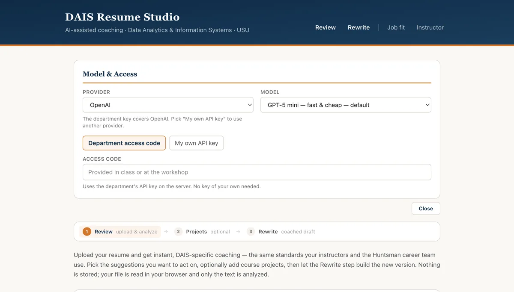

For students · Huntsman School, Data Analytics & Information Systems
DAIS Resume Studio
AI-assisted resume coaching for USU’s DAIS students, built from the department’s own feedback protocol so the advice matches what instructors and the Huntsman career team actually say.
§ 01 — What it does
For the student
Four ways in
Review: upload a resume as PDF, Word or text and get strengths, ranked improvement suggestions, before-and-after bullet rewrites and a personal closing note, all against the DAIS rubric. Job fit: paste a posting for an honest gap analysis, with matched requirements, real gaps, keywords you could truthfully add and re-angled bullets.
Project bullets: pick a DAIS course project, describe what you personally did, and get resume bullets that only claim your actual work, plus the interview questions a recruiter would ask. Rewrite: restructure the whole resume into the DAIS template and download a formatted Word document; anything unverifiable becomes a bracketed placeholder with a verify list.
For the instructor, and for privacy
A human stays in the loop
Instructor mode is the department’s workflow, not a replacement for it: the AI pre-flags issues from the shared comment library, the instructor toggles what applies and edits the closing note, and a ready-to-send feedback letter comes out in the established format. Nothing reaches a student unreviewed.
Files are parsed in the browser, so the document itself never leaves the student’s machine; only extracted text is sent, with optional redaction of contact details. The server holds no database and stores nothing. It works with a student’s own API key or a department key unlocked by a class access code.
§ 02 — Screens
